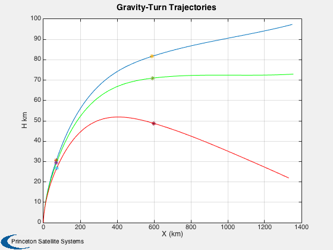
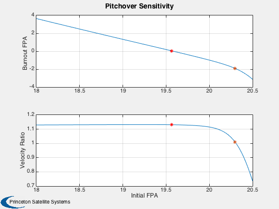
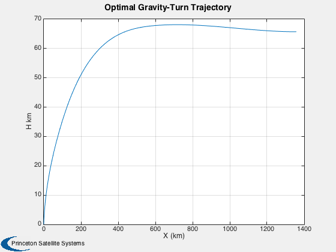

Contents
Gravity turn trajectories.
Perform multiple gravity-turn trajectories for the classic Von Braun shuttle design in the reference. As prescribed, the specified "kick angles" differ by less than one degree. Then, we perform a sensitivity analysis for a range of pitchover angles and plot the ratio of the final velocity to orbital velocity. Finally, an optimization is performed with fzero to find the pitchover angle which will result in a zero flight path angle at burnout (horizontal flight).
%-------------------------------------------------------------------------- % Reference: Wiesel, W. E., Spaceflight Dynamics, McGraw-Hill, 1988, % pp. 207-211 and table 7-2. % % See also: LaunchRHSData, MSThrustModel, GravityTurnSim2D, FGravityTurn %--------------------------------------------------------------------------
%------------------------------------------------------------------------------- % Copyright (c) 2014 Princeton Satellite Systems, Inc. % All Rights Reserved. %-------------------------------------------------------------------------------
Specify the model
rocket = VonBraunRocket; d = LaunchRHSData( 2, rocket ); d.cDA = 0.35*[30 20 10]; % Drag coefficient of each stage times area d.fThrust = @MSThrustModel; pitchover = [19 19.45 20.4]; % degrees tPitch = 10; % sec
First, replicate the plot in the reference
traj = {};
for k = 1:length(pitchover)
disp(' ')
traj{k} = GravityTurnSim2D( d, pitchover(k), tPitch );
fprintf(1,'\tFinal velocity: %f\n',traj{k}.x(3,end));
fprintf(1,'\tOrbital velocity: %f\n',VOrbit(d.Rp+traj{k}.x(2,end)));
end
xPlot = traj{1}.x;
Plot2D(xPlot(1,:),xPlot(2,:),'X (km)','H km','Gravity-Turn Trajectories');
hold on
kFirst = find(diff(xPlot(6,:)),1,'first');
kSecnd = find(diff(xPlot(6,:)),1,'last');
plot(xPlot(1,kFirst),xPlot(2,kFirst),'*')
plot(xPlot(1,kSecnd),xPlot(2,kSecnd),'*')
xPlot = traj{2}.x;
plot(xPlot(1,:),xPlot(2,:),'g')
kFirst = find(diff(xPlot(6,:)),1,'first');
kSecnd = find(diff(xPlot(6,:)),1,'last');
plot(xPlot(1,kFirst),xPlot(2,kFirst),'*')
plot(xPlot(1,kSecnd),xPlot(2,kSecnd),'*')
xPlot = traj{3}.x;
plot(xPlot(1,:),xPlot(2,:),'r')
kFirst = find(diff(xPlot(6,:)),1,'first');
kSecnd = find(diff(xPlot(6,:)),1,'last');
plot(xPlot(1,kFirst),xPlot(2,kFirst),'*')
plot(xPlot(1,kSecnd),xPlot(2,kSecnd),'*')
Pitch-over altitude: 0.419161 km Pitch-over velocity: 0.095632 km/s Final velocity: 8.880810 Orbital velocity: 7.845701 Pitch-over altitude: 0.419161 km Pitch-over velocity: 0.095632 km/s Final velocity: 8.897186 Orbital velocity: 7.860522 Pitch-over altitude: 0.419161 km Pitch-over velocity: 0.095632 km/s Final velocity: 7.101403 Orbital velocity: 7.891829
Sensitivity analysis
Next, look at the sensitivity for a larger array of initial pitchover angles. The ratio of the final velocity to orbital velocity is plotted.
disp('Evaluate 100 pitch angles...') angles = linspace(18,20.5,100); fpa = zeros(1,100); vel = zeros(1,100); for k = 1:100 traj = GravityTurnSim2D( d, angles(k), tPitch, false ); fpa(k) = traj.x(4,end); vel(k) = traj.x(3,end)/VOrbit(traj.x(2,end)+d.Rp); end Plot2D(angles,[fpa*180/pi;vel],'Initial FPA',{'Burnout FPA','Velocity Ratio'},'Pitchover Sensitivity'); kVel = find(vel>1,1,'last'); kFPA = find(fpa>0,1,'last'); subplot(2,1,2) hold on plot(angles(kVel),vel(kVel),'*') plot(angles(kFPA),vel(kFPA),'r*') subplot(2,1,1) hold on plot(angles(kVel),fpa(kVel)*180/pi,'*') plot(angles(kFPA),fpa(kFPA)*180/pi,'r*')
Evaluate 100 pitch angles...
Optimization
Finally, perform an optimization for the target pitchover angle
fpaOpt = fzero(@(x) FGravityTurn(x,d,tPitch),19); traj = GravityTurnSim2D( d, fpaOpt, tPitch ); Plot2D(traj.x(1,:),traj.x(2,:),'X (km)','H km','Optimal Gravity-Turn Trajectory'); fprintf(1,'\n\tPitchover with zero burnout FPA: %f\n',fpaOpt); fprintf(1,'\tFinal velocity: %f\n',traj.x(3,end)); fprintf(1,'\tOrbital velocity: %f\n',VOrbit(d.Rp+traj.x(2,end))); %-------------------------------------- % PSS internal file version information %--------------------------------------
Pitch-over altitude: 0.419161 km Pitch-over velocity: 0.095632 km/s Pitchover with zero burnout FPA: 19.584045 Final velocity: 8.895501 Orbital velocity: 7.864934